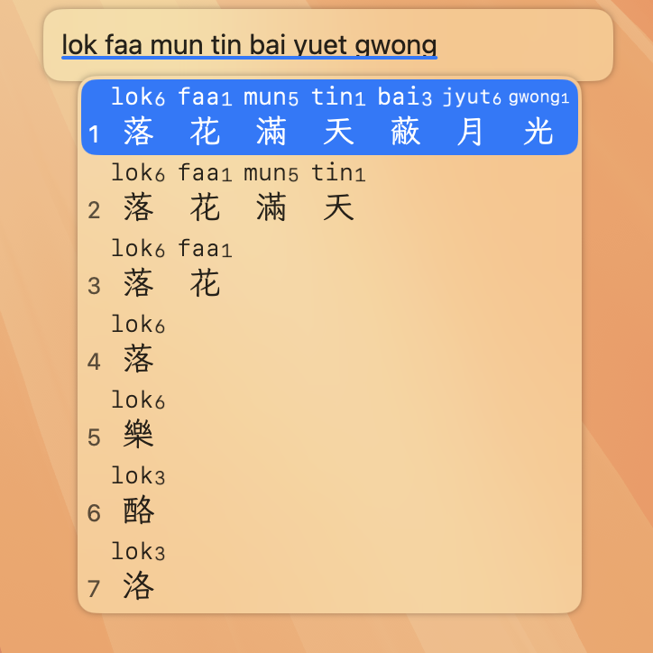

正在使用 Homebrew？可以用 Homebrew 安裝 macOS 粵拼輸入法
下載: Jyutping-v0.77.0-Mac.pkg
兼容: macOS 13 Ventura 或者更高
兼容: Apple Silicon 以及 Intel x86_64 CPU
26779057 字節(Bytes)
5a2dcb0214ccbe0679cb8ff6323c61b0783f58ae774fe91d342da5e69e4765bd安裝步驟：
安裝並且登出、登入電腦之後，如果沒有看到可用的粵拼輸入法，可以嘗試手動添加：


由於 macOS 對輸入法的管理比較複雜，粵拼輸入法內建的「檢查更新／自動更新」有可能會更新失敗。
所以更推薦直接到官網下載安裝最新版，或者用 Homebrew 安裝／更新 macOS 粵拼輸入法。
請參考： 常見問題
用輸入法時按 Control ⌃ + Shift ⇧ + `（位於 esc 鍵下方），會顯示一個選項頁面，可以選擇簡化字、標點符號樣式等各種選項。
請參考： 如何卸載 macOS 粵拼輸入法
如果你想支持作者開發，歡迎 捐贈贊助